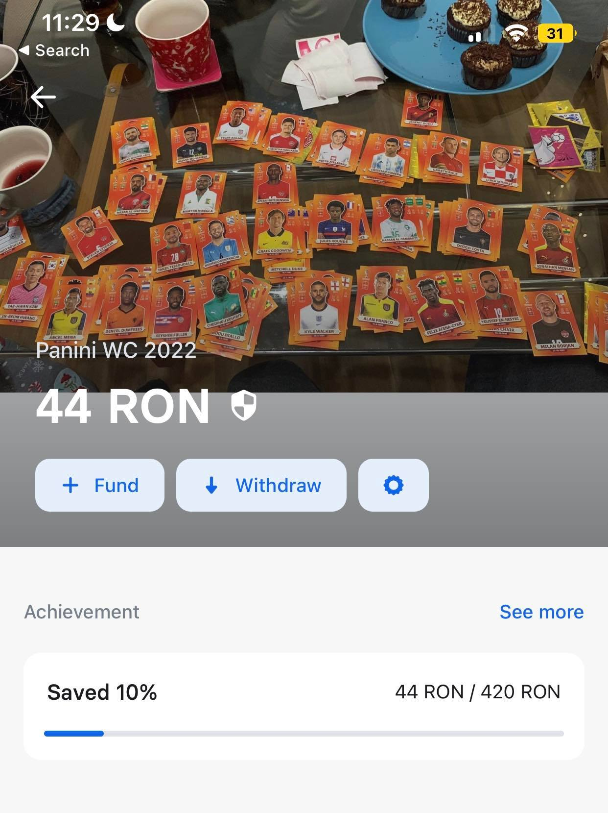

Salut, numele meu este Andrei Codreanu (prietenii imi spun si Codrut), iar aceasta pagina a fost construita
cu scopul de a imi indeplini un vis din copilarie, acela de a completa un album cu stickere cu fotbalisti
de la Panini. Au fost multe tentative, insa de aceasta data simt ca este posibil.
Probabil va intrebati de ce nu sunt capabil sa il completez de unul singur, ei bine
jumatate din banii pe care ii aveam i-am dat pe pizza, iar cealalta jumatate i-am bagat la aparate.
Editia despre care vorbim de aceasta data este FIFA World Cup 2022 care contine nu mai mult, nici mai putin
de 670 stickere. Din fericire, de ziua mea am primit 40 de pachete, ceea ce mi-a oferit un start destul de bun,
iar in momentul de fata detin undeva la 198 de stickere unice si 5 dubluri(aceste numere vor fi actualizate dupa
fiecare achizitie de pachete)
 1 pachet = 4.2 lei
1 pachet = 4.2 lei
Deci va rog donati, donati ca sa-mi iau pachete. Orice suma este bine-venita, am facut un vault in revolut in care voi
strange toti banii, iar la final de saptamana ii scot, cumpar pachete(sau droguri daca chiar am multi) si voi posta un
update aici cu ce carti mi-au picat, poze si statistici din acea saptamana(cati bani s-au strans, cartonase unice vs dubluri etc.).
De asemenea, aceasta pagina se va actualiza de fiecare data cand cineva doneaza cu suma daca se doreste si numele donatorului.
(daca doriti sa nu afisez suma lasati in descrierea donatiei, de asemenea va rog sa specificati ca este pentru cartonase).
Donatiile se fac exclusiv prin Revolut la acest link: https://revolut.me/codreal6zk
Sper sa mearga link-ul ca n-am testat, am o poza cu Pepe(broasca).
Situatia actuala din vault:

UPDATE 19.11.2022(primul donator) Robert Cobzariu - 1 leu(e ITist lmao)